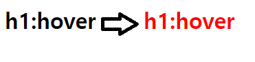
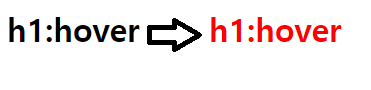
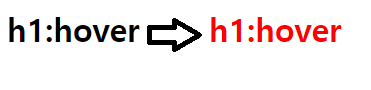

의사클래스(가상클래스)는 선택자에 추가하는 키워드로, 요소가 어떤 특정한
상태가 되었을 때 요소를 선택하겠다는 의미.

| 의사클래스 | 의미 |
|---|---|
| hover | 마우스 포인터가 요소에 올라가 있다. |
| active | 사용자가 요소를 활성화 했다.(Ex : 마우스로 누르기와 같은) |
| focus | 요소가 포커스를 받고 있다. |
| disabled | 비활성 상태의 요소이다. |
| nth-child() | 형제 사이에서의 순서에 따라 요소를 선택한다. |